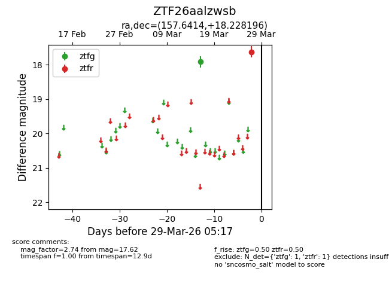
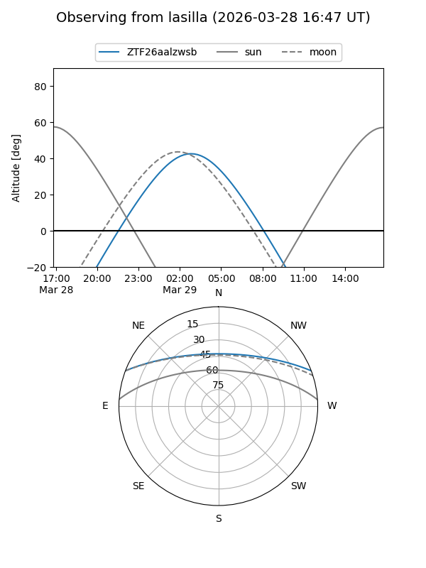
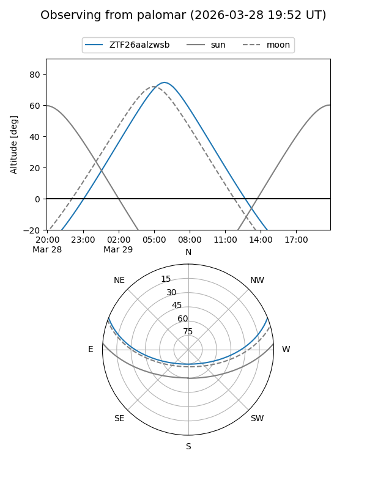

ZTF26aalzwsb
Target ZTF26aalzwsb at 2026-03-29 05:20
Aliases and brokers:
FINK: link
Lasair: link
ALeRCE: link
alt names
ZTF26aalzwsb (ztf,fink_ztf)
Coordinates:
equatorial (ra, dec) = 157.6414,+18.22820
equatorial (HMS+DMS) = 10:30:33.94,+18:13:41.51
galactic (l, b) = (220.7735,+56.43235)
Flags:
Photometry:
last ztfg=17.92, ztfr=17.62
1 ztfg, 1 ztfr detections
Lightcurve

Visibility


Additional plots